CHIR HIV RV306 Vaginal - Phylosmith Diversity
Francesc Català-Moll & Oriol Careta Borràs
2024-06-04
Last updated: 2024-06-04
Checks: 7 0
Knit directory: OriolGEM.github.io/
This reproducible R Markdown analysis was created with workflowr (version 1.7.1). The Checks tab describes the reproducibility checks that were applied when the results were created. The Past versions tab lists the development history.
Great! Since the R Markdown file has been committed to the Git repository, you know the exact version of the code that produced these results.
Great job! The global environment was empty. Objects defined in the global environment can affect the analysis in your R Markdown file in unknown ways. For reproduciblity it’s best to always run the code in an empty environment.
The command set.seed(20240321) was run prior to running
the code in the R Markdown file. Setting a seed ensures that any results
that rely on randomness, e.g. subsampling or permutations, are
reproducible.
Great job! Recording the operating system, R version, and package versions is critical for reproducibility.
Nice! There were no cached chunks for this analysis, so you can be confident that you successfully produced the results during this run.
Great job! Using relative paths to the files within your workflowr project makes it easier to run your code on other machines.
Great! You are using Git for version control. Tracking code development and connecting the code version to the results is critical for reproducibility.
The results in this page were generated with repository version 64c7378. See the Past versions tab to see a history of the changes made to the R Markdown and HTML files.
Note that you need to be careful to ensure that all relevant files for
the analysis have been committed to Git prior to generating the results
(you can use wflow_publish or
wflow_git_commit). workflowr only checks the R Markdown
file, but you know if there are other scripts or data files that it
depends on. Below is the status of the Git repository when the results
were generated:
Ignored files:
Ignored: .Rhistory
Ignored: .Rproj.user/
Ignored: code/.RData
Ignored: code/.Rhistory
Ignored: data/
Note that any generated files, e.g. HTML, png, CSS, etc., are not included in this status report because it is ok for generated content to have uncommitted changes.
These are the previous versions of the repository in which changes were
made to the R Markdown
(analysis/008_phylosmith_diversity.Rmd) and HTML
(docs/008_phylosmith_diversity.html) files. If you’ve
configured a remote Git repository (see ?wflow_git_remote),
click on the hyperlinks in the table below to view the files as they
were in that past version.
| File | Version | Author | Date | Message |
|---|---|---|---|---|
| Rmd | e36d2e8 | OriolGEM | 2024-06-03 | update |
| html | e36d2e8 | OriolGEM | 2024-06-03 | update |
Introduction
For this study, an initial analysis of differential abundance will be conducted using the CHIR HIV RV306 Vaginal dataset. The aim is to identify microbial taxa that are differentially abundant between groups of interest, such as individuals which have received the vaccine and individuals which have received the placebo. The analysis will provide a foundation for further investigations into potential associations between differential abundance and disease outcomes. Specifically, four different tests will be applied:
Alpha-diversity graph: displays alpha diversity measures across different samples or groups. The graph display Shannon diversity index. Each data point on the graph represents agroup, and the y-axis represents the diversity metric. This graph helps visualize the variation in diversity within and between different groups.
Dendrogram based on phylogenetic diversity: a tree-like diagram that displays the evolutionary relationships between different taxa in a microbial community. It shows how closely related microbial communities are based on their evolutionary history. The length of the branches represents the degree of dissimilarity between communities, with shorter branches indicating greater similarity.
PCoA plot: it is a method used to visualize and explore patterns in multivariate data sets. It shows the similarity or dissimilarity between microbial communities across different groups. Each point on the plot represents a sample, and the distance between points reflects the similarity or dissimilarity in microbial composition. It helps to visualize clustering patterns and identify potential relationships between samples.
t-SNE plot: it is a dimensionality reduction technique commonly used for visualizing high-dimensional data sets. It is used to visualize the relationships between samples based on microbial composition. It projects high-dimensional microbial data into a lower-dimensional space while preserving local similarities. The plot often reveals clusters or patterns in the data that might not be apparent in the original high-dimensional space, helping to identify distinct microbial communities or sample groups.
Extract and preprocess phyloseq object from the mre
library(dplyr)
## Load mre
mre <- readr::read_rds(here::here("data", "preprocessed", "mre.rds"))
mre#> MetarSet-class experimental-level object
#> [MetadataSet ]: 481 samples and 7 variables
#> [DiversitySet ]:
#> ✖ igc: 0 observations and 0 samples
#> ✔ virgo: 14765 observations and 481 samples
#> ✖ dada2: 0 observations and 0 samples
#> [TaxaSet ]:
#> ✖ metaphlan: no phyloseq object available
#> ✖ kraken: no phyloseq object available
#> ✖ bracken: no phyloseq object available
#> ✖ motus: no phyloseq object available
#> ✔ virgo: phyloseq object with 269 taxa and 481 samples
#> ✖ dada2: no phyloseq object available
#> [GeneFunctionSet ]:
#> ✖ humann: no functional data aviable
#> ✖ igc: no functional data aviable
#> ✔ virgo: 4621 kegg_id, 0 cog_id, 0 eggnog_id, 0 ec_id and 0 metacyc_id
#> ✖ fmap: no functional data aviable
#> ✖ picrust2: no functional data aviable
#> ✖ tax4fun: no functional data aviable
#> ✖ phylolisft: no functional data aviable## Get Phyloseq from virgo slot & preprocess
phy <-
metar::get_phyloseq(mre, type = "virgo") %>%
microbiome::transform(transform = "compositional") %>%
microbiome::core(detection = 0.001, prevalence = 0.1)
phy#> phyloseq-class experiment-level object
#> otu_table() OTU Table: [ 27 taxa and 481 samples ]
#> sample_data() Sample Data: [ 481 samples by 31 sample variables ]
#> tax_table() Taxonomy Table: [ 27 taxa by 1 taxonomic ranks ]Generate abundance plots for all categorical variables and also for Timepoint var
library(phylosmith)
plts <-
c(metar::get_cat(mre)$CategoricalVariable, "Timepoint") %>%
purrr::set_names() %>%
purrr::map(~ {
print(.x)
list(
alpha_diversity_graph = alpha_diversity_graph(phy, treatment = .x),
dendrogram_phyloseq = dendrogram_phyloseq(phy, treatment = .x),
pcoa_phyloseq = pcoa_phyloseq(phy, treatment = .x),
tsne_phyloseq = tsne_phyloseq(phy, treatment = .x)
)
})#> [1] "Treatment_group"
#> [1] "Arm"
#> [1] "Heme_test"
#> [1] "Medical_center"
#> [1] "Treatment_group_1"
#> [1] "Timepoint"Results
Treatment_group
purrr::walk(plts$Treatment_group_1, plot)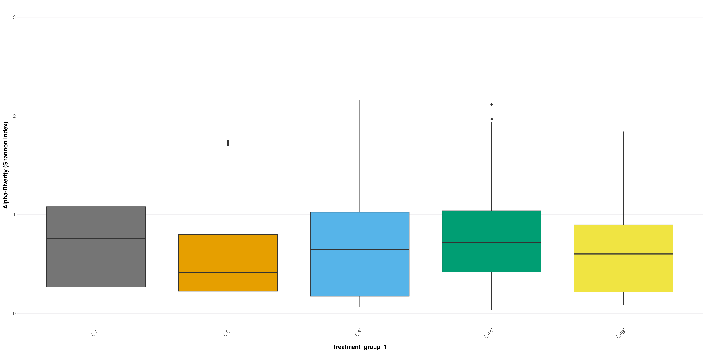
| Version | Author | Date |
|---|---|---|
| e36d2e8 | OriolGEM | 2024-06-03 |
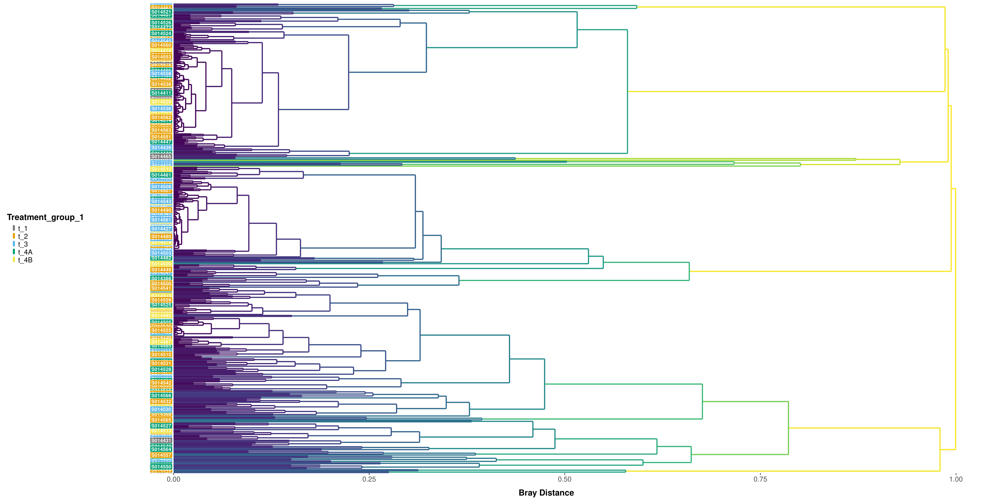
| Version | Author | Date |
|---|---|---|
| e36d2e8 | OriolGEM | 2024-06-03 |
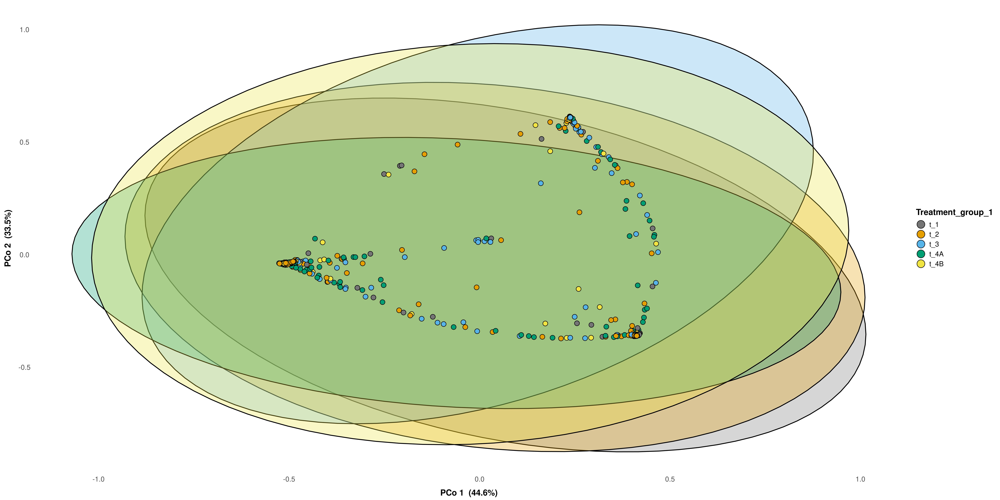
| Version | Author | Date |
|---|---|---|
| e36d2e8 | OriolGEM | 2024-06-03 |
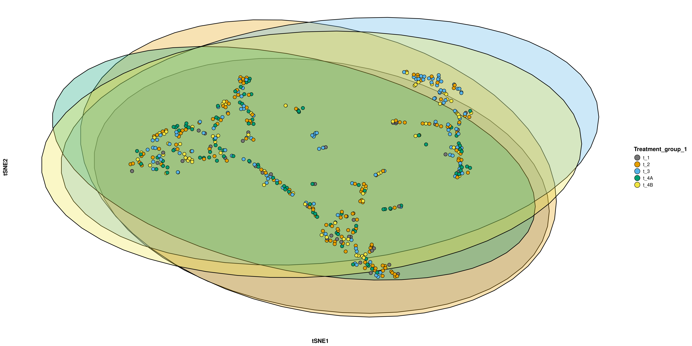
| Version | Author | Date |
|---|---|---|
| e36d2e8 | OriolGEM | 2024-06-03 |
Arm
purrr::walk(plts$Arm, plot) # Apply the plot() function to each element in the plts$Arm list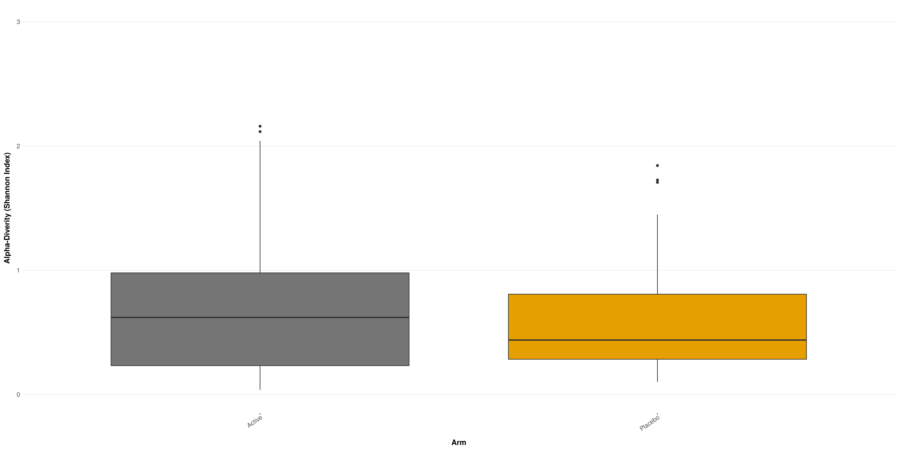
| Version | Author | Date |
|---|---|---|
| e36d2e8 | OriolGEM | 2024-06-03 |
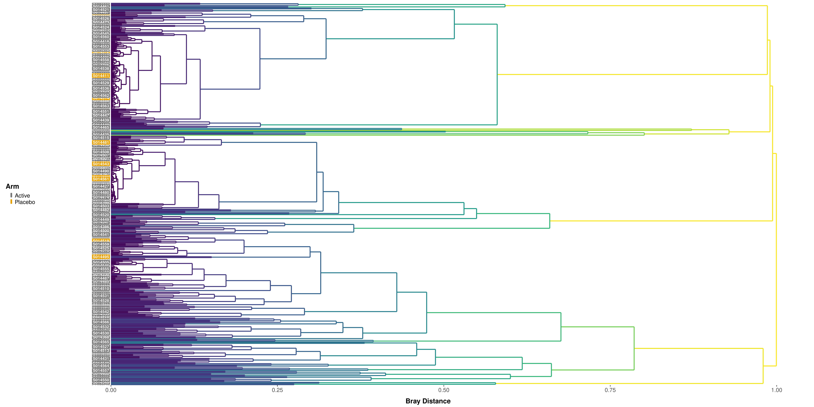
| Version | Author | Date |
|---|---|---|
| e36d2e8 | OriolGEM | 2024-06-03 |
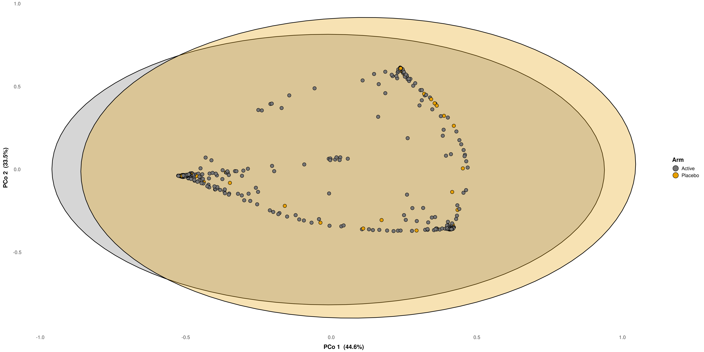
| Version | Author | Date |
|---|---|---|
| e36d2e8 | OriolGEM | 2024-06-03 |
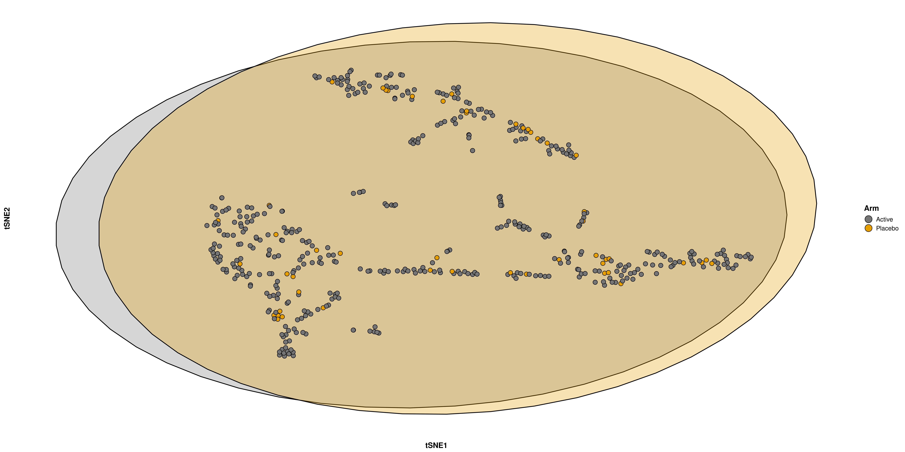
| Version | Author | Date |
|---|---|---|
| e36d2e8 | OriolGEM | 2024-06-03 |
Heme_test
purrr::walk(plts$Heme_test, plot) # Apply the plot() function to each element in the plts$Heme_test list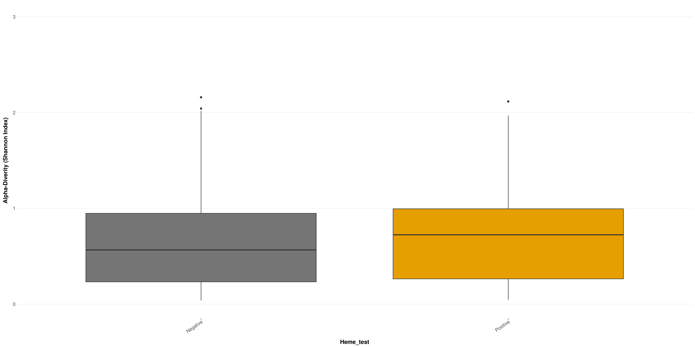
| Version | Author | Date |
|---|---|---|
| e36d2e8 | OriolGEM | 2024-06-03 |
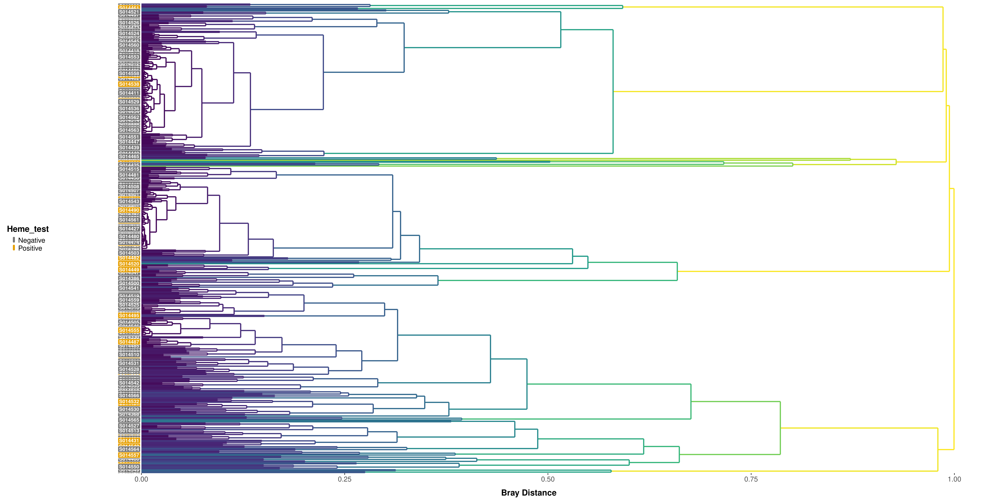
| Version | Author | Date |
|---|---|---|
| e36d2e8 | OriolGEM | 2024-06-03 |
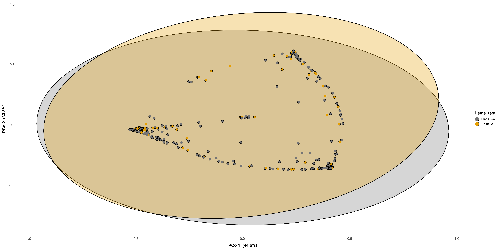
| Version | Author | Date |
|---|---|---|
| e36d2e8 | OriolGEM | 2024-06-03 |
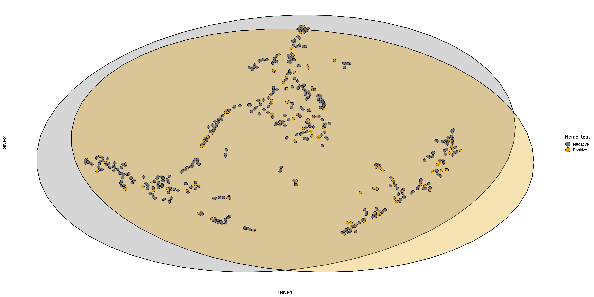
| Version | Author | Date |
|---|---|---|
| e36d2e8 | OriolGEM | 2024-06-03 |
Medical_center
purrr::walk(plts$Medical_center, plot) # Apply the plot() function to each element in the plts$Medical_center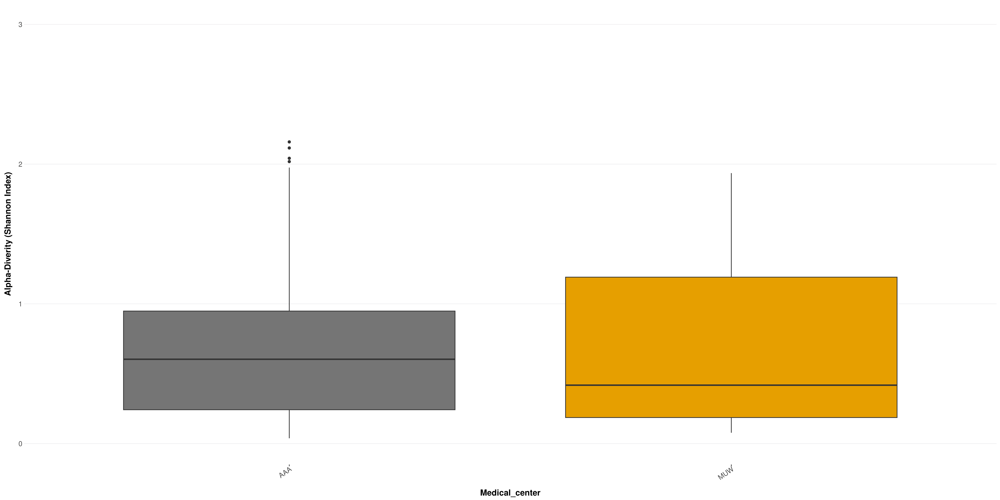
| Version | Author | Date |
|---|---|---|
| e36d2e8 | OriolGEM | 2024-06-03 |
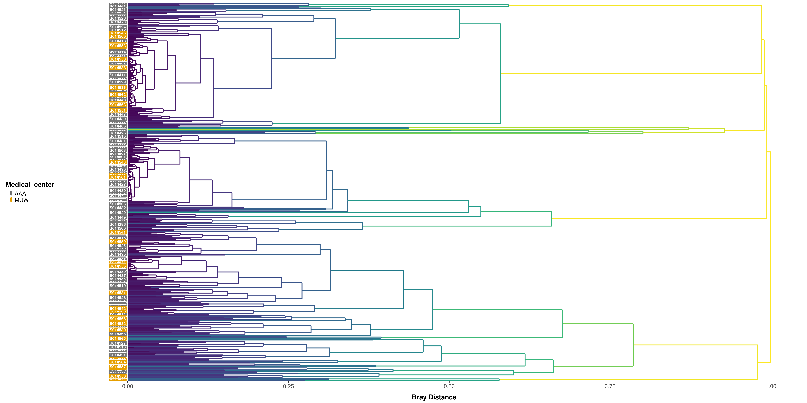
| Version | Author | Date |
|---|---|---|
| e36d2e8 | OriolGEM | 2024-06-03 |
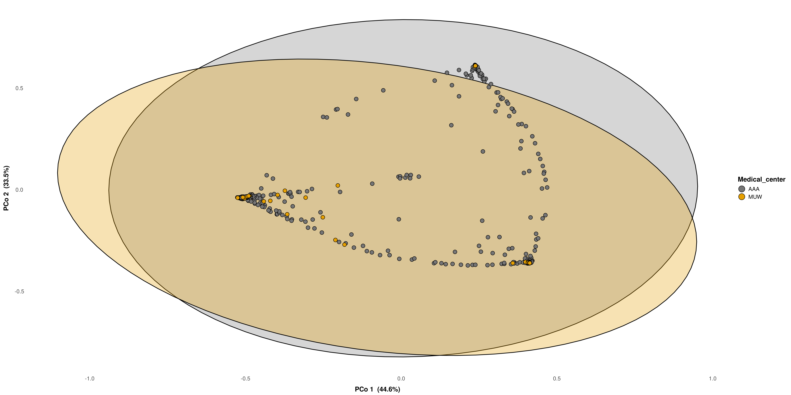
| Version | Author | Date |
|---|---|---|
| e36d2e8 | OriolGEM | 2024-06-03 |
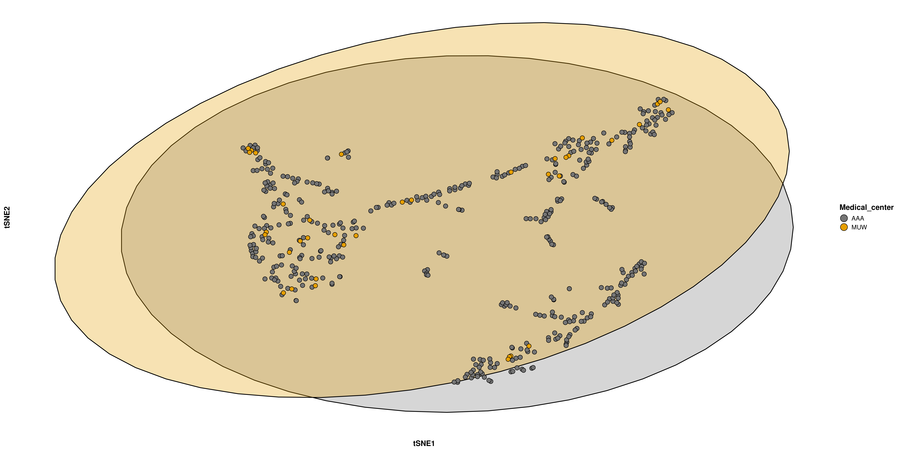
| Version | Author | Date |
|---|---|---|
| e36d2e8 | OriolGEM | 2024-06-03 |
Timepoint
purrr::walk(plts$Timepoint, plot) # Apply the plot() function to each element in the plts$Timepoint list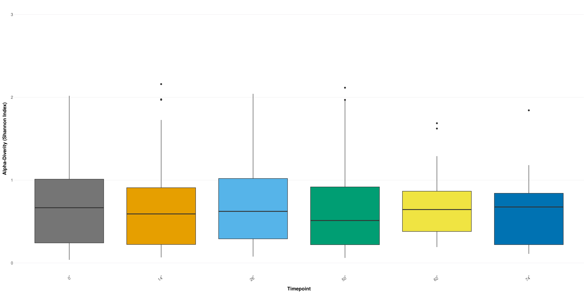
| Version | Author | Date |
|---|---|---|
| e36d2e8 | OriolGEM | 2024-06-03 |

| Version | Author | Date |
|---|---|---|
| e36d2e8 | OriolGEM | 2024-06-03 |
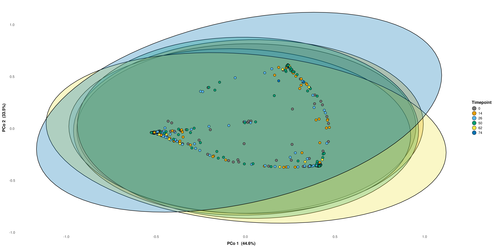
| Version | Author | Date |
|---|---|---|
| e36d2e8 | OriolGEM | 2024-06-03 |
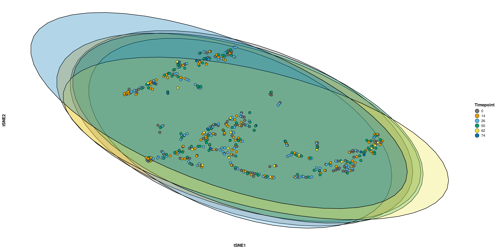
| Version | Author | Date |
|---|---|---|
| e36d2e8 | OriolGEM | 2024-06-03 |
In any of the categorical variables explored, the number of species was not found to be significantly different, and no clear clusters were shown.
sessionInfo()#> R version 4.1.2 (2021-11-01)
#> Platform: x86_64-pc-linux-gnu (64-bit)
#> Running under: Ubuntu 22.04.4 LTS
#>
#> Matrix products: default
#> BLAS: /usr/lib/x86_64-linux-gnu/openblas-pthread/libblas.so.3
#> LAPACK: /usr/lib/x86_64-linux-gnu/openblas-pthread/libopenblasp-r0.3.20.so
#>
#> locale:
#> [1] LC_CTYPE=en_US.UTF-8 LC_NUMERIC=C
#> [3] LC_TIME=es_ES.UTF-8 LC_COLLATE=en_US.UTF-8
#> [5] LC_MONETARY=es_ES.UTF-8 LC_MESSAGES=en_US.UTF-8
#> [7] LC_PAPER=es_ES.UTF-8 LC_NAME=C
#> [9] LC_ADDRESS=C LC_TELEPHONE=C
#> [11] LC_MEASUREMENT=es_ES.UTF-8 LC_IDENTIFICATION=C
#>
#> attached base packages:
#> [1] stats graphics grDevices utils datasets methods base
#>
#> other attached packages:
#> [1] phylosmith_1.0.7 dplyr_1.1.4
#>
#> loaded via a namespace (and not attached):
#> [1] utf8_1.2.4 tidyselect_1.2.1
#> [3] RSQLite_2.3.6 AnnotationDbi_1.56.2
#> [5] htmlwidgets_1.6.4 grid_4.1.2
#> [7] BiocParallel_1.28.3 Rtsne_0.17
#> [9] pROC_1.18.5 munsell_0.5.1
#> [11] units_0.8-5 codetools_0.2-20
#> [13] effectsize_0.8.8 withr_3.0.0
#> [15] colorspace_2.1-0 Biobase_2.54.0
#> [17] phyloseq_1.38.0 highr_0.10
#> [19] knitr_1.46 rstudioapi_0.16.0
#> [21] stats4_4.1.2 ggsignif_0.6.4
#> [23] ggside_0.3.1 labeling_0.4.3
#> [25] MatrixGenerics_1.6.0 git2r_0.33.0
#> [27] GenomeInfoDbData_1.2.7 polyclip_1.10-6
#> [29] bit64_4.0.5 farver_2.1.2
#> [31] datawizard_0.10.0 rhdf5_2.38.1
#> [33] rprojroot_2.0.4 vctrs_0.6.5
#> [35] generics_0.1.3 TH.data_1.1-2
#> [37] xfun_0.44 R6_2.5.1
#> [39] doParallel_1.0.17 GenomeInfoDb_1.30.1
#> [41] graphlayouts_1.1.1 clue_0.3-65
#> [43] locfit_1.5-9.9 microbiome_1.16.0
#> [45] bitops_1.0-7 rhdf5filters_1.6.0
#> [47] cachem_1.1.0 DelayedArray_0.20.0
#> [49] promises_1.3.0 scales_1.3.0
#> [51] ggraph_2.2.1 multcomp_1.4-25
#> [53] gtable_0.3.5 tidygraph_1.3.1
#> [55] sandwich_3.1-0 workflowr_1.7.1
#> [57] rlang_1.1.3 zeallot_0.1.0
#> [59] genefilter_1.76.0 GlobalOptions_0.1.2
#> [61] splines_4.1.2 rstatix_0.7.2
#> [63] lazyeval_0.2.2 broom_1.0.6
#> [65] yaml_2.3.8 reshape2_1.4.4
#> [67] abind_1.4-5 backports_1.5.0
#> [69] httpuv_1.6.15 ggmosaic_0.3.3
#> [71] tools_4.1.2 ggplot2_3.5.1
#> [73] jquerylib_0.1.4 biomformat_1.22.0
#> [75] selbal_0.1.0 RColorBrewer_1.1-3
#> [77] proxy_0.4-27 BiocGenerics_0.40.0
#> [79] Rcpp_1.0.12 plyr_1.8.9
#> [81] zlibbioc_1.40.0 classInt_0.4-10
#> [83] purrr_1.0.2 RCurl_1.98-1.14
#> [85] ggpubr_0.6.0 viridis_0.6.5
#> [87] GetoptLong_1.0.5 correlation_0.8.4
#> [89] S4Vectors_0.32.4 zoo_1.8-12
#> [91] SummarizedExperiment_1.24.0 ggrepel_0.9.5
#> [93] cluster_2.1.6 fs_1.6.4
#> [95] here_1.0.1 magrittr_2.0.3
#> [97] data.table_1.15.4 RSpectra_0.16-1
#> [99] circlize_0.4.16 mvtnorm_1.2-5
#> [101] whisker_0.4.1 matrixStats_1.3.0
#> [103] hms_1.1.3 patchwork_1.2.0
#> [105] evaluate_0.23 xtable_1.8-4
#> [107] XML_3.99-0.16.1 IRanges_2.28.0
#> [109] gridExtra_2.3 shape_1.4.6.1
#> [111] compiler_4.1.2 ellipse_0.5.0
#> [113] tibble_3.2.1 KernSmooth_2.23-24
#> [115] ggstatsplot_0.12.3 crayon_1.5.2
#> [117] htmltools_0.5.8.1 mgcv_1.9-1
#> [119] corpcor_1.6.10 later_1.3.2
#> [121] tzdb_0.4.0 geneplotter_1.72.0
#> [123] tidyr_1.3.1 libcoin_1.0-10
#> [125] RcppParallel_5.1.7 DBI_1.2.2
#> [127] tweenr_2.0.3 ComplexHeatmap_2.18.0
#> [129] MASS_7.3-60.0.1 sf_1.0-16
#> [131] Matrix_1.3-4 ade4_1.7-22
#> [133] car_3.1-2 readr_2.1.5
#> [135] permute_0.9-7 cli_3.6.2
#> [137] parallel_4.1.2 insight_0.19.11
#> [139] igraph_2.0.3 GenomicRanges_1.46.1
#> [141] pkgconfig_2.0.3 metar_0.1.5
#> [143] statsExpressions_1.5.4 coin_1.4-3
#> [145] plotly_4.10.4 paletteer_1.6.0
#> [147] foreach_1.5.2 rARPACK_0.11-0
#> [149] annotate_1.72.0 bslib_0.7.0
#> [151] multtest_2.50.0 XVector_0.34.0
#> [153] stringr_1.5.1 digest_0.6.35
#> [155] parameters_0.21.7 vegan_2.6-6.1
#> [157] Biostrings_2.62.0 rmarkdown_2.27
#> [159] dendextend_1.17.1 modeltools_0.2-23
#> [161] rjson_0.2.21 lifecycle_1.0.4
#> [163] nlme_3.1-164 jsonlite_1.8.8
#> [165] Rhdf5lib_1.16.0 carData_3.0-5
#> [167] mixOmics_6.18.1 viridisLite_0.4.2
#> [169] fansi_1.0.6 pillar_1.9.0
#> [171] lattice_0.22-6 KEGGREST_1.34.0
#> [173] fastmap_1.2.0 httr_1.4.7
#> [175] survival_3.6-4 glue_1.7.0
#> [177] bayestestR_0.13.2 png_0.1-8
#> [179] iterators_1.0.14 bit_4.0.5
#> [181] class_7.3-22 ggforce_0.4.2
#> [183] stringi_1.8.4 sass_0.4.9
#> [185] blob_1.2.4 rematch2_2.1.2
#> [187] DESeq2_1.34.0 lefser_1.4.0
#> [189] memoise_2.0.1 e1071_1.7-14
#> [191] ape_5.8